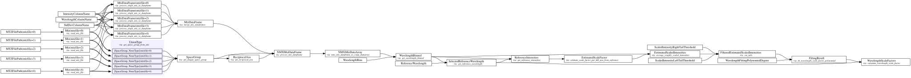
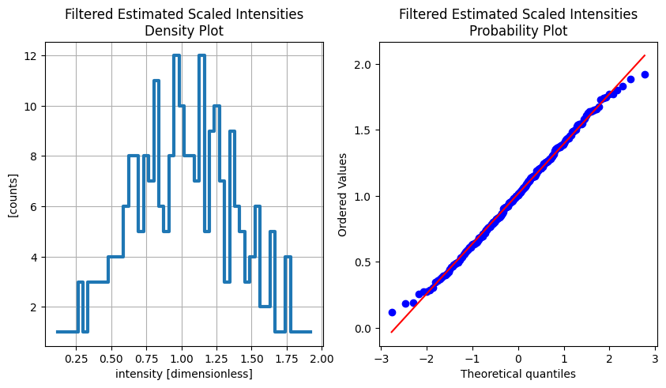
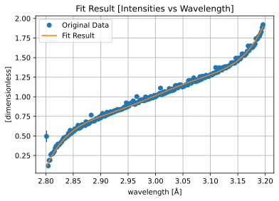
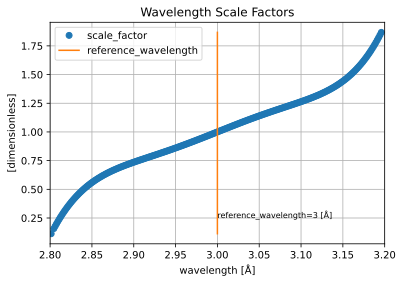

Scaling#
MTZ IO#
ess.nmx has MTZ IO helper functions. They can be used as providers in a workflow of scaling routine.
They are wrapping MTZ IO functions of gemmi.
[1]:
%matplotlib inline
[2]:
import gemmi
from ess.nmx.mtz_io import (
read_mtz_file,
mtz_to_pandas,
MTZFilePath,
get_unique_space_group,
MtzDataFrame,
merge_mtz_dataframes,
)
from ess.nmx.data import get_small_random_mtz_samples
small_mtz_sample = get_small_random_mtz_samples()[0]
mtz = read_mtz_file(MTZFilePath(small_mtz_sample))
df = mtz_to_pandas(mtz)
df.head()
Downloading file 'mtz_random_samples.tar.gz' from 'https://public.esss.dk/groups/scipp/ess/nmx/mtz_random_samples.tar.gz' to '/home/runner/.cache/essnmx/0'.
Untarring contents of '/home/runner/.cache/essnmx/0/mtz_random_samples.tar.gz' to '/home/runner/.cache/essnmx/0/mtz_random_samples.tar.gz.untar'
[2]:
| I | SIGI | LAMBDA | H | K | L | |
|---|---|---|---|---|---|---|
| 0 | 124.962219 | 16.215948 | 3.199984 | 34.0 | 99.0 | 0.0 |
| 1 | 120.856743 | 14.550026 | 3.199915 | -25.0 | -24.0 | 71.0 |
| 2 | 119.300064 | 13.047421 | 3.199908 | 52.0 | -84.0 | 63.0 |
| 3 | 117.497627 | 16.257229 | 3.199904 | -36.0 | 93.0 | 18.0 |
| 4 | 114.670326 | 11.597502 | 3.199864 | -96.0 | 51.0 | -47.0 |
Build Pipeline#
Scaling routine includes:
Reducing individual MTZ dataset
Merging MTZ dataset
Reducing merged MTZ dataset
These operations are done on pandas dataframe as recommended in gemmi. And multiple MTZ files are expected, so we need to use sciline.ParamTable.
[3]:
import pandas as pd
import sciline as sl
import scipp as sc
from ess.nmx.mtz_io import providers as mtz_io_providers, default_parameters as mtz_io_params
from ess.nmx.mtz_io import SpaceGroupDesc
from ess.nmx.scaling import providers as scaling_providers, default_parameters as scaling_params
from ess.nmx.scaling import (
WavelengthBins,
FilteredEstimatedScaledIntensities,
ReferenceWavelength,
ScaledIntensityLeftTailThreshold,
ScaledIntensityRightTailThreshold,
)
pl = sl.Pipeline(
providers=mtz_io_providers + scaling_providers,
params={
SpaceGroupDesc: "C 1 2 1",
ReferenceWavelength: sc.scalar(
3, unit=sc.units.angstrom
), # Remove it if you want to use the middle of the bin
ScaledIntensityLeftTailThreshold: sc.scalar(
0.1, # Increase it to remove more outliers
),
ScaledIntensityRightTailThreshold: sc.scalar(
4.0, # Decrease it to remove more outliers
),
**mtz_io_params,
**scaling_params,
WavelengthBins: 250,
},
)
pl
[3]:
| Name | Value | Source |
|---|---|---|
| EstimatedScaleFactor |
estimate_scale_factor_per_hkl_asu_from_referenceess.nmx.scaling.estimate_scale_factor_per_hkl_asu_from_reference | |
| EstimatedScaledIntensities |
average_roughly_scaled_intensitiesess.nmx.scaling.average_roughly_scaled_intensities | |
| FilteredEstimatedScaledIntensities |
cut_tailsess.nmx.scaling.cut_tails | |
| FittingResult |
fit_wavelength_scale_factor_polynomialess.nmx.scaling.fit_wavelength_scale_factor_polynomial | |
| IntensityColumnName | I | |
| MTZFilePath | ||
| Mtz |
read_mtz_fileess.nmx.mtz_io.read_mtz_file | |
| MtzDataFrame |
process_single_mtz_to_dataframeess.nmx.mtz_io.process_single_mtz_to_dataframe | |
| NMXMtzDataArray |
nmx_mtz_dataframe_to_scipp_dataarrayess.nmx.mtz_io.nmx_mtz_dataframe_to_scipp_dataarray | |
| NMXMtzDataFrame |
process_mtz_dataframeess.nmx.mtz_io.process_mtz_dataframe | |
| ReciprocalAsu |
get_reciprocal_asuess.nmx.mtz_io.get_reciprocal_asu | |
| ReferenceIntensities |
get_reference_intensitiesess.nmx.scaling.get_reference_intensities | |
| ReferenceWavelength |
<scipp.Variable> () ...<scipp.Variable> () int64 [Å] 3 |
|
| ScaledIntensityLeftTailThreshold |
<scipp.Variable> () f...<scipp.Variable> () float64 [dimensionless] 0.1 |
|
| ScaledIntensityRightTailThreshold |
<scipp.Variable> () f...<scipp.Variable> () float64 [dimensionless] 2 |
|
| SelectedReferenceWavelength |
get_reference_wavelengthess.nmx.scaling.get_reference_wavelength | |
| SpaceGroup | ||
| SpaceGroup | NoneType |
get_space_group_from_mtzess.nmx.mtz_io.get_space_group_from_mtz | |
| SpaceGroupDesc | C 1 2 1 | |
| StdDevColumnName | SIGI | |
| WavelengthBinned |
get_wavelength_binnedess.nmx.scaling.get_wavelength_binned | |
| WavelengthBins | 250 | |
| WavelengthColumnName | LAMBDA | |
| WavelengthFittingPolynomialDegree | 7 | |
| WavelengthScaleFactors |
calculate_wavelength_scale_factoress.nmx.scaling.calculate_wavelength_scale_factor |
[4]:
file_paths = pd.DataFrame({MTZFilePath: get_small_random_mtz_samples()}).rename_axis(
"mtzfile"
)
mapped = pl.map(file_paths)
pl[gemmi.SpaceGroup] = mapped[gemmi.SpaceGroup | None].reduce(
index='mtzfile', func=get_unique_space_group
)
pl[MtzDataFrame] = mapped[MtzDataFrame].reduce(
index='mtzfile', func=merge_mtz_dataframes
)
Build Workflow#
[5]:
from ess.nmx.scaling import WavelengthScaleFactors
scaling_nmx_workflow = pl.get(WavelengthScaleFactors)
scaling_nmx_workflow.visualize(graph_attr={"rankdir": "LR"})
[5]:

Compute Desired Type#
[6]:
from ess.nmx.scaling import (
SelectedReferenceWavelength,
FittingResult,
WavelengthScaleFactors,
)
results = scaling_nmx_workflow.compute(
(
FilteredEstimatedScaledIntensities,
SelectedReferenceWavelength,
FittingResult,
WavelengthScaleFactors,
)
)
results[WavelengthScaleFactors]
[6]:
- wavelength: 247
- wavelength(wavelength)float64Å2.801, 2.804, ..., 3.194, 3.196
Values:
array([2.80126774, 2.80446398, 2.80606211, 2.80766023, 2.80925835, 2.81085647, 2.81245459, 2.81405271, 2.81565083, 2.81724895, 2.81884707, 2.82044519, 2.82204331, 2.82364143, 2.82523955, 2.82683767, 2.8284358 , 2.83003392, 2.83163204, 2.83323016, 2.83482828, 2.8364264 , 2.83802452, 2.83962264, 2.84122076, 2.84281888, 2.844417 , 2.84601512, 2.84761324, 2.84921136, 2.85080948, 2.85240761, 2.85400573, 2.85560385, 2.85720197, 2.85880009, 2.86039821, 2.86199633, 2.86359445, 2.86519257, 2.86679069, 2.86838881, 2.86998693, 2.87158505, 2.87318317, 2.8747813 , 2.87637942, 2.87797754, 2.87957566, 2.88117378, 2.8827719 , 2.88437002, 2.88596814, 2.88756626, 2.88916438, 2.8907625 , 2.89236062, 2.89395874, 2.89555686, 2.89715498, 2.89875311, 2.90035123, 2.90194935, 2.90354747, 2.90514559, 2.90674371, 2.90834183, 2.90993995, 2.91153807, 2.91313619, 2.91473431, 2.91633243, 2.91793055, 2.91952867, 2.9211268 , 2.92272492, 2.92432304, 2.92592116, 2.92751928, 2.9291174 , 2.93071552, 2.93231364, 2.93391176, 2.93550988, 2.937108 , 2.93870612, 2.94030424, 2.94190236, 2.94350048, 2.94509861, 2.94669673, 2.94829485, 2.94989297, 2.95149109, 2.95308921, 2.95468733, 2.95628545, 2.95788357, 2.95948169, 2.96107981, 2.96267793, 2.96427605, 2.96587417, 2.9674723 , 2.96907042, 2.97066854, 2.97226666, 2.97386478, 2.9754629 , 2.97706102, 2.97865914, 2.98025726, 2.98185538, 2.9834535 , 2.98505162, 2.98664974, 2.98824786, 2.98984598, 2.99144411, 2.99304223, 2.99464035, 2.99623847, 2.99783659, 2.99943471, 3.00103283, 3.00263095, 3.00422907, 3.00582719, 3.00742531, 3.00902343, 3.01062155, 3.01221967, 3.0138178 , 3.01541592, 3.01701404, 3.01861216, 3.02021028, 3.0218084 , 3.02340652, 3.02500464, 3.02660276, 3.02820088, 3.029799 , 3.03139712, 3.03299524, 3.03459336, 3.03619148, 3.03778961, 3.03938773, 3.04098585, 3.04258397, 3.04418209, 3.04578021, 3.04737833, 3.04897645, 3.05057457, 3.05217269, 3.05377081, 3.05536893, 3.05696705, 3.05856517, 3.0601633 , 3.06176142, 3.06335954, 3.06495766, 3.06655578, 3.0681539 , 3.06975202, 3.07135014, 3.07294826, 3.07454638, 3.0761445 , 3.07774262, 3.07934074, 3.08093886, 3.08253698, 3.08413511, 3.08573323, 3.08733135, 3.08892947, 3.09052759, 3.09212571, 3.09372383, 3.09532195, 3.09692007, 3.09851819, 3.10011631, 3.10171443, 3.10331255, 3.10491067, 3.1065088 , 3.10810692, 3.10970504, 3.11130316, 3.11290128, 3.1144994 , 3.11609752, 3.11769564, 3.11929376, 3.12089188, 3.12249 , 3.12408812, 3.12568624, 3.12728436, 3.12888248, 3.13048061, 3.13207873, 3.13367685, 3.13527497, 3.13687309, 3.13847121, 3.14006933, 3.14166745, 3.14326557, 3.14486369, 3.14646181, 3.14805993, 3.14965805, 3.15125617, 3.1528543 , 3.15445242, 3.15605054, 3.15764866, 3.15924678, 3.1608449 , 3.16244302, 3.16404114, 3.16563926, 3.16723738, 3.1688355 , 3.17043362, 3.17203174, 3.17362986, 3.17522798, 3.17682611, 3.17842423, 3.18002235, 3.18162047, 3.18321859, 3.18481671, 3.18641483, 3.18801295, 3.18961107, 3.19120919, 3.19280731, 3.19440543, 3.19600355])
- (wavelength)float64𝟙0.113, 0.158, ..., 1.841, 1.863
Values:
array([0.11293644, 0.15786471, 0.17927499, 0.20000795, 0.22008209, 0.23951563, 0.25832648, 0.27653223, 0.29415019, 0.31119733, 0.32769036, 0.34364567, 0.35907935, 0.37400721, 0.38844477, 0.40240726, 0.4159096 , 0.42896648, 0.44159225, 0.45380101, 0.4656066 , 0.47702255, 0.48806214, 0.49873837, 0.50906399, 0.51905147, 0.52871301, 0.53806057, 0.54710585, 0.55586028, 0.56433505, 0.5725411 , 0.5804891 , 0.58818952, 0.59565253, 0.60288811, 0.60990598, 0.61671561, 0.62332626, 0.62974696, 0.63598648, 0.6420534 , 0.64795606, 0.65370259, 0.65930087, 0.66475861, 0.67008326, 0.6752821 , 0.68036218, 0.68533034, 0.69019323, 0.69495728, 0.69962874, 0.70421366, 0.70871789, 0.71314708, 0.71750672, 0.72180208, 0.72603828, 0.73022023, 0.73435268, 0.73844019, 0.74248715, 0.7464978 , 0.75047617, 0.75442617, 0.75835151, 0.76225577, 0.76614234, 0.77001448, 0.77387528, 0.7777277 , 0.78157452, 0.78541841, 0.78926188, 0.7931073 , 0.7969569 , 0.80081278, 0.80467692, 0.80855114, 0.81243716, 0.81633656, 0.82025081, 0.82418126, 0.82812914, 0.83209556, 0.83608152, 0.84008793, 0.84411558, 0.84816514, 0.85223722, 0.85633229, 0.86045076, 0.86459293, 0.86875901, 0.87294912, 0.87716331, 0.88140154, 0.88566369, 0.88994956, 0.89425889, 0.89859134, 0.9029465 , 0.9073239 , 0.91172301, 0.91614323, 0.92058391, 0.92504434, 0.92952378, 0.93402141, 0.93853638, 0.9430678 , 0.94761474, 0.95217621, 0.95675123, 0.96133874, 0.96593767, 0.97054694, 0.97516542, 0.97979198, 0.98442546, 0.98906468, 0.99370847, 0.99835562, 1.00300493, 1.00765521, 1.01230524, 1.01695382, 1.02159975, 1.02624184, 1.0308789 , 1.03550978, 1.0401333 , 1.04474835, 1.04935381, 1.05394859, 1.05853163, 1.06310191, 1.06765843, 1.07220022, 1.07672637, 1.081236 , 1.08572828, 1.09020242, 1.09465769, 1.0990934 , 1.10350893, 1.10790372, 1.11227727, 1.11662913, 1.12095895, 1.12526641, 1.12955131, 1.13381349, 1.13805289, 1.14226953, 1.14646352, 1.15063504, 1.15478438, 1.15891193, 1.16301816, 1.16710365, 1.17116909, 1.17521527, 1.1792431 , 1.18325357, 1.18724784, 1.19122714, 1.19519285, 1.19914647, 1.20308963, 1.20702408, 1.21095171, 1.21487455, 1.21879478, 1.22271471, 1.22663679, 1.23056364, 1.23449802, 1.23844286, 1.24240122, 1.24637634, 1.25037164, 1.25439068, 1.25843722, 1.26251516, 1.2666286 , 1.27078183, 1.27497931, 1.27922567, 1.28352576, 1.28788462, 1.29230746, 1.29679972, 1.30136702, 1.30601521, 1.31075032, 1.31557861, 1.32050655, 1.32554084, 1.33068839, 1.33595632, 1.34135201, 1.34688306, 1.35255729, 1.35838276, 1.3643678 , 1.37052095, 1.37685101, 1.38336703, 1.39007831, 1.39699442, 1.40412517, 1.41148066, 1.41907122, 1.42690748, 1.43500034, 1.44336096, 1.45200079, 1.46093156, 1.4701653 , 1.4797143 , 1.48959117, 1.49980881, 1.51038041, 1.52131946, 1.53263978, 1.54435546, 1.55648095, 1.56903097, 1.58202059, 1.59546519, 1.60938047, 1.62378248, 1.63868758, 1.65411248, 1.67007421, 1.68659017, 1.70367808, 1.72135603, 1.73964245, 1.75855613, 1.77811621, 1.7983422 , 1.81925398, 1.8408718 , 1.86321627])
Plots#
Here are plotting examples of the fitting/estimation results.
Estimated Scaled Intensities.#
[7]:
import scipy.stats as stats
import matplotlib.pyplot as plt
fig, (density_ax, prob_ax) = plt.subplots(1, 2, figsize=(10, 5))
densities = sc.values(results[FilteredEstimatedScaledIntensities].data).values
sc.values(results[FilteredEstimatedScaledIntensities].data).hist(intensity=50).plot(
title="Filtered Estimated Scaled Intensities\nDensity Plot",
grid=True,
linewidth=3,
ax=density_ax,
)
stats.probplot(densities, dist="norm", plot=prob_ax)
prob_ax.set_title("Filtered Estimated Scaled Intensities\nProbability Plot")
[7]:
Text(0.5, 1.0, 'Filtered Estimated Scaled Intensities\nProbability Plot')

Curve Fitting#
[8]:
import plopp as pp
import numpy as np
from ess.nmx.scaling import FittingResult
chebyshev_func = np.polynomial.chebyshev.Chebyshev(np.array([1, -1, 1]))
scale_function = np.vectorize(
chebyshev_func / chebyshev_func(results[SelectedReferenceWavelength].value)
)
pp.plot(
{
"Original Data": results[FilteredEstimatedScaledIntensities],
"Fit Result": results[FittingResult].fit_output,
},
grid=True,
title="Fit Result [Intensities vs Wavelength]",
marker={"Chebyshev": None, "Fit Result": None},
linestyle={"Chebyshev": "solid", "Fit Result": "solid"},
)
[8]:

[9]:
reference_wavelength = sc.DataArray(
data=sc.concat(
[
results[WavelengthScaleFactors].data.min(),
results[WavelengthScaleFactors].data.max(),
],
"wavelength",
),
coords={
"wavelength": sc.broadcast(
results[SelectedReferenceWavelength], dims=["wavelength"], shape=[2]
)
},
)
wavelength_scale_factor_plot = pp.plot(
{
"scale_factor": results[WavelengthScaleFactors],
"reference_wavelength": reference_wavelength,
},
title="Wavelength Scale Factors",
grid=True,
marker={"reference_wavelength": None},
linestyle={"reference_wavelength": "solid"},
)
wavelength_scale_factor_plot.ax.set_xlim(2.8, 3.2)
reference_wavelength = results[SelectedReferenceWavelength].value
wavelength_scale_factor_plot.ax.text(
3.0,
0.25,
f"{reference_wavelength=:} [{results[SelectedReferenceWavelength].unit}]",
fontsize=8,
color="black",
)
wavelength_scale_factor_plot
[9]:

Change Provider#
Here is an example of how to insert different filter function.
In this example, we will swap a provider that filters EstimatedScaledIntensities and provide FilteredEstimatedScaledIntensities.
After updating the providers, you can go back to Compute Desired Type and start over.
[10]:
from typing import NewType
import scipp as sc
from ess.nmx.scaling import (
EstimatedScaledIntensities,
FilteredEstimatedScaledIntensities,
)
# Define the new types for the filtering function
NRoot = NewType("NRoot", int)
"""The n-th root to be taken for the standard deviation."""
NRootStdDevCut = NewType("NRootStdDevCut", float)
"""The number of standard deviations to be cut from the n-th root data."""
def _calculate_sample_standard_deviation(var: sc.Variable) -> sc.Variable:
"""Calculate the sample variation of the data.
This helper function is a temporary solution before
we release new scipp version with the statistics helper.
"""
import numpy as np
return sc.scalar(np.nanstd(var.values))
# Define the filtering function with right argument types and return type
def cut_estimated_scaled_intensities_by_n_root_std_dev(
scaled_intensities: EstimatedScaledIntensities,
n_root: NRoot,
n_root_std_dev_cut: NRootStdDevCut,
) -> FilteredEstimatedScaledIntensities:
"""Filter the mtz data array by the quad root of the sample standard deviation.
Parameters
----------
scaled_intensities:
The scaled intensities to be filtered.
n_root:
The n-th root to be taken for the standard deviation.
Higher n-th root means cutting is more effective on the right tail.
More explanation can be found in the notes.
n_root_std_dev_cut:
The number of standard deviations to be cut from the n-th root data.
Returns
-------
:
The filtered scaled intensities.
"""
# Check the range of the n-th root
if n_root < 1:
raise ValueError("The n-th root should be equal to or greater than 1.")
copied = scaled_intensities.copy(deep=False)
nth_root = copied.data ** (1 / n_root)
# Calculate the mean
nth_root_mean = nth_root.nanmean()
# Calculate the sample standard deviation
nth_root_std_dev = _calculate_sample_standard_deviation(nth_root)
# Calculate the cut value
half_window = n_root_std_dev_cut * nth_root_std_dev
keep_range = (nth_root_mean - half_window, nth_root_mean + half_window)
# Filter the data
return FilteredEstimatedScaledIntensities(
copied[(nth_root > keep_range[0]) & (nth_root < keep_range[1])]
)
pl.insert(cut_estimated_scaled_intensities_by_n_root_std_dev)
pl[NRoot] = 4
pl[NRootStdDevCut] = 1.0
pl.compute(FilteredEstimatedScaledIntensities)
[10]:
- wavelength: 180
- wavelength(wavelength)float64Å2.857, 2.859, ..., 3.143, 3.145
Values:
array([2.85720197, 2.85880009, 2.86199633, 2.86359445, 2.86519257, 2.86679069, 2.86838881, 2.86998693, 2.87158505, 2.87318317, 2.8747813 , 2.87637942, 2.87797754, 2.87957566, 2.88117378, 2.8827719 , 2.88437002, 2.88596814, 2.88756626, 2.88916438, 2.8907625 , 2.89236062, 2.89395874, 2.89555686, 2.89715498, 2.89875311, 2.90035123, 2.90194935, 2.90354747, 2.90514559, 2.90674371, 2.90834183, 2.90993995, 2.91153807, 2.91313619, 2.91473431, 2.91633243, 2.91793055, 2.91952867, 2.9211268 , 2.92272492, 2.92432304, 2.92592116, 2.92751928, 2.9291174 , 2.93071552, 2.93231364, 2.93391176, 2.93550988, 2.937108 , 2.93870612, 2.94030424, 2.94190236, 2.94350048, 2.94509861, 2.94669673, 2.94829485, 2.94989297, 2.95149109, 2.95308921, 2.95468733, 2.95628545, 2.95788357, 2.95948169, 2.96107981, 2.96267793, 2.96427605, 2.96587417, 2.9674723 , 2.96907042, 2.97066854, 2.97226666, 2.97386478, 2.9754629 , 2.97706102, 2.97865914, 2.98025726, 2.98185538, 2.9834535 , 2.98505162, 2.98664974, 2.98824786, 2.98984598, 2.99144411, 2.99304223, 2.99464035, 2.99623847, 2.99783659, 2.99943471, 3.00103283, 3.00263095, 3.00422907, 3.00582719, 3.00742531, 3.00902343, 3.01062155, 3.01221967, 3.0138178 , 3.01541592, 3.01701404, 3.01861216, 3.02021028, 3.0218084 , 3.02340652, 3.02500464, 3.02660276, 3.02820088, 3.029799 , 3.03139712, 3.03299524, 3.03459336, 3.03619148, 3.03778961, 3.03938773, 3.04098585, 3.04258397, 3.04418209, 3.04578021, 3.04737833, 3.04897645, 3.05057457, 3.05217269, 3.05377081, 3.05536893, 3.05696705, 3.05856517, 3.0601633 , 3.06176142, 3.06335954, 3.06495766, 3.06655578, 3.0681539 , 3.06975202, 3.07135014, 3.07294826, 3.07454638, 3.0761445 , 3.07774262, 3.07934074, 3.08093886, 3.08253698, 3.08413511, 3.08573323, 3.08733135, 3.08892947, 3.09052759, 3.09212571, 3.09372383, 3.09532195, 3.09692007, 3.09851819, 3.10011631, 3.10171443, 3.10331255, 3.10491067, 3.1065088 , 3.10810692, 3.10970504, 3.11130316, 3.11290128, 3.1144994 , 3.11609752, 3.11769564, 3.11929376, 3.12089188, 3.12249 , 3.12408812, 3.12568624, 3.12728436, 3.12888248, 3.13048061, 3.13207873, 3.13367685, 3.13527497, 3.13687309, 3.13847121, 3.14006933, 3.14166745, 3.14326557, 3.14486369])
- (wavelength)float64𝟙0.607, 0.635, ..., 1.426, 1.433σ = 0.008, 0.010, ..., 0.016, 0.016
Values:
array([0.60701136, 0.63543251, 0.61014797, 0.60687841, 0.64063341, 0.64477855, 0.63060851, 0.6354285 , 0.63241668, 0.6801704 , 0.64791815, 0.65241405, 0.67176579, 0.66216388, 0.67983785, 0.76573685, 0.6897617 , 0.69497858, 0.68923385, 0.69421855, 0.71312324, 0.71762069, 0.71924796, 0.71350834, 0.73973755, 0.73987078, 0.73091883, 0.76524373, 0.78709439, 0.75940385, 0.7531101 , 0.75556798, 0.7649094 , 0.80252712, 0.77212538, 0.78140896, 0.78655757, 0.80898602, 0.79107113, 0.80424133, 0.81415732, 0.80318773, 0.82257562, 0.82421577, 0.81914805, 0.83883417, 0.82893376, 0.83124682, 0.83585803, 0.83850146, 0.84103569, 0.84695262, 0.85688075, 0.86945677, 0.85906804, 0.9218925 , 0.86914816, 0.91045699, 0.88111809, 0.91048742, 0.9135022 , 0.92319082, 0.9091663 , 0.94769961, 0.91789943, 0.90172197, 0.91641999, 1.00243711, 0.92708451, 0.92340422, 0.94519391, 0.958041 , 0.95741827, 0.94907516, 0.96260363, 0.94877115, 0.95156596, 0.99797824, 0.98314835, 0.96406614, 0.98796071, 0.97131976, 0.97809237, 1.0047737 , 0.98358337, 0.98823764, 0.99075758, 1.01890895, 1.00002533, 1.00280132, 1.01720885, 1.02456602, 1.02862338, 1.04339159, 1.11048209, 1.02642898, 1.03125943, 1.05767551, 1.03819415, 1.06594585, 1.0475024 , 1.05550821, 1.05997372, 1.06479941, 1.10447633, 1.07160543, 1.08583605, 1.10037271, 1.07918654, 1.096032 , 1.09064145, 1.14224181, 1.14131522, 1.1131383 , 1.11509902, 1.14921045, 1.14752224, 1.15394375, 1.13732574, 1.12480986, 1.13199338, 1.1355053 , 1.14498709, 1.15131283, 1.16019585, 1.14926851, 1.20596178, 1.19317325, 1.20938738, 1.17243895, 1.18824331, 1.2029705 , 1.24170481, 1.19589819, 1.19257404, 1.21140305, 1.20021868, 1.21995624, 1.20940748, 1.256482 , 1.21893929, 1.22344128, 1.26310797, 1.25332745, 1.24698495, 1.24481521, 1.27492469, 1.25980644, 1.25842109, 1.26101988, 1.26799712, 1.28305818, 1.27821921, 1.28031813, 1.2984795 , 1.29552409, 1.30833405, 1.37305781, 1.3077331 , 1.35069681, 1.31686891, 1.37084274, 1.34994883, 1.36527644, 1.34026168, 1.36052391, 1.37756447, 1.36338963, 1.38524905, 1.36879148, 1.38171194, 1.38826252, 1.38789918, 1.40076755, 1.41014075, 1.43422107, 1.43542983, 1.43605585, 1.42629685, 1.43292886])
Variances (σ²):
array([5.74795388e-05, 9.93314364e-05, 3.98175406e-05, 5.14143117e-05, 6.59856884e-05, 6.35042274e-05, 5.12313977e-05, 5.03618029e-05, 5.48519377e-05, 6.64681424e-05, 5.44289193e-05, 5.28388613e-05, 6.18483531e-05, 6.49031775e-05, 5.17519600e-05, 1.58387702e-04, 5.97465988e-05, 6.94945851e-05, 6.17728263e-05, 6.55613101e-05, 6.64384083e-05, 6.10811798e-05, 6.79638741e-05, 6.27376788e-05, 6.04419593e-05, 5.94244647e-05, 6.86752165e-05, 6.63347564e-05, 1.16998465e-04, 7.06466281e-05, 7.18489677e-05, 6.07973663e-05, 6.64159835e-05, 9.21256233e-05, 7.51157075e-05, 7.64880785e-05, 7.49804098e-05, 8.41489392e-05, 8.22133027e-05, 8.44401545e-05, 8.60130996e-05, 8.42609198e-05, 9.90535932e-05, 8.61488066e-05, 8.50271382e-05, 8.76785252e-05, 8.34146837e-05, 7.02328085e-05, 1.00364941e-04, 9.05520394e-05, 9.42670424e-05, 9.19481589e-05, 9.79183486e-05, 9.65009092e-05, 8.78656880e-05, 1.20414926e-04, 9.97904008e-05, 1.23560947e-04, 9.40254289e-05, 1.04686854e-04, 1.14489579e-04, 1.22188220e-04, 1.13109919e-04, 1.28414724e-04, 1.25353117e-04, 1.21911209e-04, 9.33227901e-05, 1.74027431e-04, 1.04913489e-04, 1.25347383e-04, 1.10791537e-04, 1.26701847e-04, 1.09050282e-04, 1.24742060e-04, 1.30781863e-04, 1.05761382e-04, 1.11854640e-04, 1.41779497e-04, 1.31608731e-04, 1.30743276e-04, 1.20826420e-04, 1.26319151e-04, 1.34927236e-04, 1.38158530e-04, 1.27356091e-04, 1.19864312e-04, 1.11187810e-04, 1.48789152e-04, 1.01213931e-04, 1.20698080e-04, 1.43554691e-04, 1.38697908e-04, 1.25700611e-04, 1.37931585e-04, 1.61406860e-04, 1.37677380e-04, 1.58749289e-04, 1.38160188e-04, 1.55284500e-04, 1.42545751e-04, 1.27560210e-04, 1.42550483e-04, 1.49925713e-04, 1.52065118e-04, 1.55441427e-04, 1.23287290e-04, 1.55261442e-04, 1.44539525e-04, 1.24982438e-04, 1.57909050e-04, 1.49287766e-04, 2.06205310e-04, 1.90313201e-04, 1.77068448e-04, 1.71384686e-04, 1.79194967e-04, 1.81565258e-04, 1.82234209e-04, 1.63582868e-04, 1.53892338e-04, 1.61651550e-04, 1.55816162e-04, 1.77663538e-04, 1.43336109e-04, 1.79886967e-04, 1.44532259e-04, 2.15440507e-04, 1.78006524e-04, 1.68227794e-04, 1.43395734e-04, 1.68639373e-04, 2.08071896e-04, 2.88074238e-04, 1.69707896e-04, 2.09134167e-04, 1.68616751e-04, 1.68781981e-04, 1.89460765e-04, 1.70585735e-04, 2.13972053e-04, 1.83197052e-04, 1.77821792e-04, 2.12173908e-04, 1.94450779e-04, 2.00403246e-04, 2.15643301e-04, 1.80441688e-04, 2.11129070e-04, 2.12913190e-04, 2.02940199e-04, 1.92602365e-04, 1.97268100e-04, 2.11366868e-04, 2.23142283e-04, 2.23695021e-04, 1.99477666e-04, 2.05906838e-04, 2.75295912e-04, 2.21289923e-04, 2.34401372e-04, 2.12831768e-04, 2.33427866e-04, 2.35852820e-04, 2.32453124e-04, 2.25265472e-04, 2.60025287e-04, 2.28782691e-04, 2.31453403e-04, 2.34481505e-04, 2.85590814e-04, 3.04085898e-04, 2.48227948e-04, 2.44201201e-04, 2.40701814e-04, 2.76635060e-04, 2.38082663e-04, 2.61419961e-04, 2.59264576e-04, 2.41191106e-04, 2.51345766e-04])